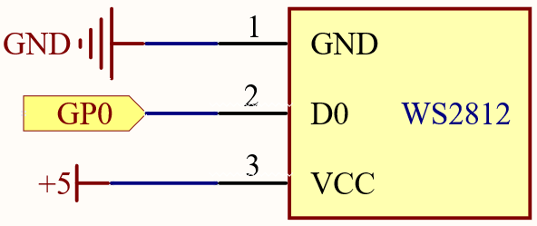
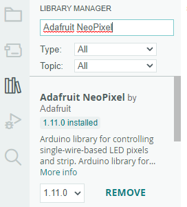

Note
Hello, welcome to the SunFounder Raspberry Pi & Arduino & ESP32 Enthusiasts Community on Facebook! Dive deeper into Raspberry Pi, Arduino, and ESP32 with fellow enthusiasts.
Why Join?
Expert Support: Solve post-sale issues and technical challenges with help from our community and team.
Learn & Share: Exchange tips and tutorials to enhance your skills.
Exclusive Previews: Get early access to new product announcements and sneak peeks.
Special Discounts: Enjoy exclusive discounts on our newest products.
Festive Promotions and Giveaways: Take part in giveaways and holiday promotions.
👉 Ready to explore and create with us? Click [here] and join today!
3.3 - RGB LED Strip¶
WS2812 is a intelligent control LED light source that the control circuit and RGB chip are integrated in a package of 5050 components. It internal include intelligent digital port data latch and signal reshaping amplification drive circuit. Also include a precision internal oscillator and a programmable constant current control part, effectively ensuring the pixel point light color height consistent.
The data transfer protocol use single NZR communication mode. After the pixel power-on reset, the DIN port receive data from controller, the first pixel collect initial 24bit data then sent to the internal data latch, the other data which reshaping by the internal signal reshaping amplification circuit sent to the next cascade pixel through the DO port. After transmission for each pixel，the signal to reduce 24bit. pixel adopt auto reshaping transmit technology, making the pixel cascade number is not limited the signal transmission, only depend on the speed of signal transmission.
Schematic

Wiring
{kind=link}
Warning
One thing you need to pay attention to is current.
Although the LED Strip with any number of LEDs can be used in Pico, the power of its VBUS pin is limited. Here, we will use eight LEDs, which are safe. But if you want to use more LEDs, you need to add a separate power supply.
Code
Note
You can open the file
3.3_rgb_led_strip.inounder the path ofeuler-kit/arduino/3.3_rgb_led_strip.Or copy this code into Arduino IDE.
Then select the Raspberry Pi Pico board and the correct port before clicking the Upload button.
The
Adafruit_NeoPixellibrary is used here, you can install it from the Library Manager.
Let’s select some favorite colors and display them on the RGB LED Strip!
How it works?
Declare a Adafruit_NeoPixel type object, it is connected to PIXEL_PIN,
there are PIXEL_COUNT RGB LEDs on the strip.
#define PIXEL_PIN 0
#define PIXEL_COUNT 8
// Declare our NeoPixel strip object:
Adafruit_NeoPixel strip(PIXEL_COUNT, PIXEL_PIN, NEO_GRB + NEO_KHZ800);
// Argument 1 = Number of pixels in NeoPixel strip
// Argument 2 = Arduino pin number (most are valid)
// Argument 3 = Pixel type flags, add together as needed:
// NEO_KHZ800 800 KHz bitstream (most NeoPixel products w/WS2812 LEDs)
// NEO_KHZ400 400 KHz (classic 'v1' (not v2) FLORA pixels, WS2811 drivers)
// NEO_GRB Pixels are wired for GRB bitstream (most NeoPixel products)
// NEO_RGB Pixels are wired for RGB bitstream (v1 FLORA pixels, not v2)
// NEO_RGBW Pixels are wired for RGBW bitstream (NeoPixel RGBW products)
Initialize strip object and initialize all pixels to ‘off’.
- Function
strip.begin(): Initialize NeoPixel strip object (REQUIRED).strip.setPixelColor(index, color): Set pixel’s color (in RAM), thecolormust be a single ‘packed’ 32-bit value.strip.Color(red, green, blue): Color as a single ‘packed’ 32-bit value.strip.show(): Update strip with new contents.
Learn More
We can randomly generate colors and make a colorful flowing light.
Note
You can open the file
3.3_rgb_led_strip_flowing.inounder the path ofeuler-kit/arduino/3.3_rgb_led_strip_flowing.Or copy this code into Arduino IDE.
Then select the Raspberry Pi Pico board and the correct port before clicking the Upload button.
Or have this WS2812 LED Strip rainbow cycle around the color wheel (range 65535).
Note
You can open the file
3.3_rgb_led_strip_rainbow.inounder the path ofeuler-kit/arduino/3.3_rgb_led_strip_rainbow.Or copy this code into Arduino IDE.
Don’t forget to select the Raspberry Pi Pico board and the correct port before clicking the Upload button.
strip.getPixelColor(index): Query the color of a previously-set pixel.strip.ColorHSV(pixelHue): Convert hue, saturation and value into a packed 32-bit RGB color that can be passed tosetPixelColor()or other RGB-compatible functions.strip.gamma32(): Provides a “truer” color before assigning to each pixel.